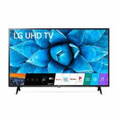
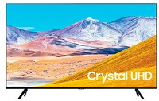
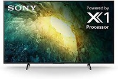
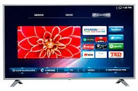

LG
El mismo contenido puede verse diferente según la tecnología de visualización que tenga un televisor. Los televisores LG OLED tienen millones de píxeles autoiluminados que pueden encenderse y apagarse para conseguir un negro perfecto y un contraste infinito. Los televisores LED y Mini LED utilizan luces de fondo que no son autoemisivas. Esto significa que no pueden crear un negro perfecto y también pueden sufrir el efecto de halo.
Samsung
Samsung es la principal marca de TV desde hace 14 años. * Fuente: Omdia, enero de 2020. La clasificación se basa en términos de envíos. Los resultados no están garantizados por Samsung. La credibilidad de estos resultados es responsabilidad de la tercera parte.
Sony
Disfruta de todos los momentos clave en deportes, películas y juegos de ritmo rápido con procesamiento de velocidad de movimiento de 120 imágenes, minimizando el retraso de imagen para crear una imagen clara sin desenfoque de movimiento
Hyundai
Sumérgete en tus contenidos con una gama de colores mucho más amplia. La pantalla Crystal Display garantiza una expresión de colores optimizada para que no te pierdas ningún detalle.